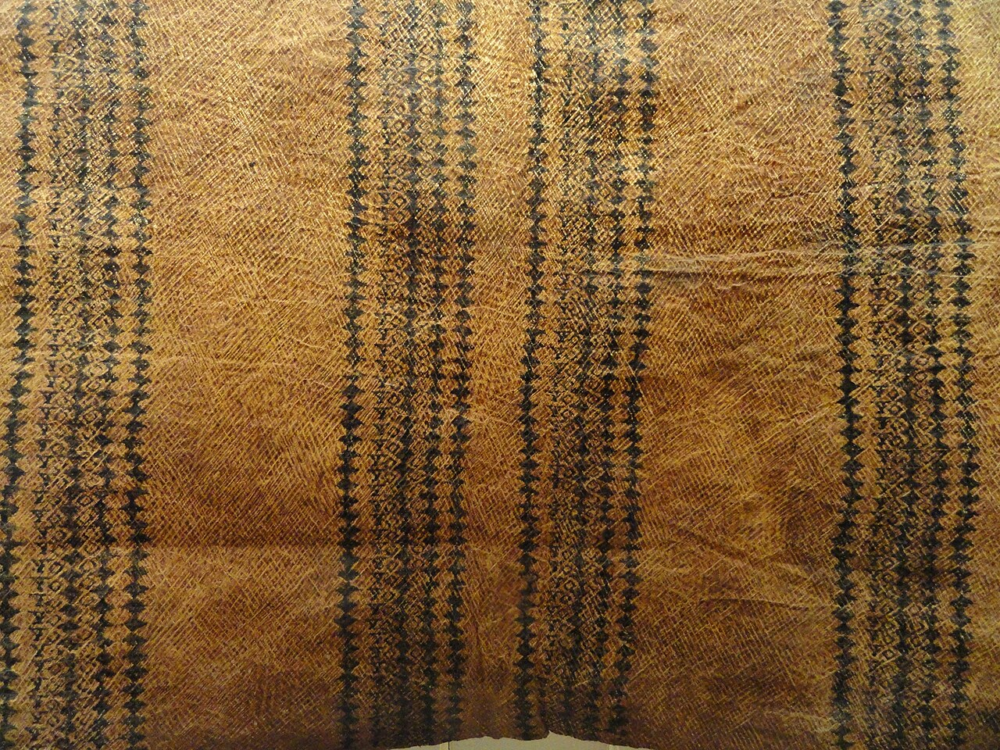
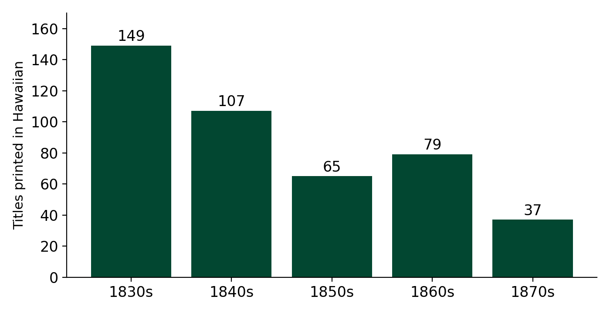
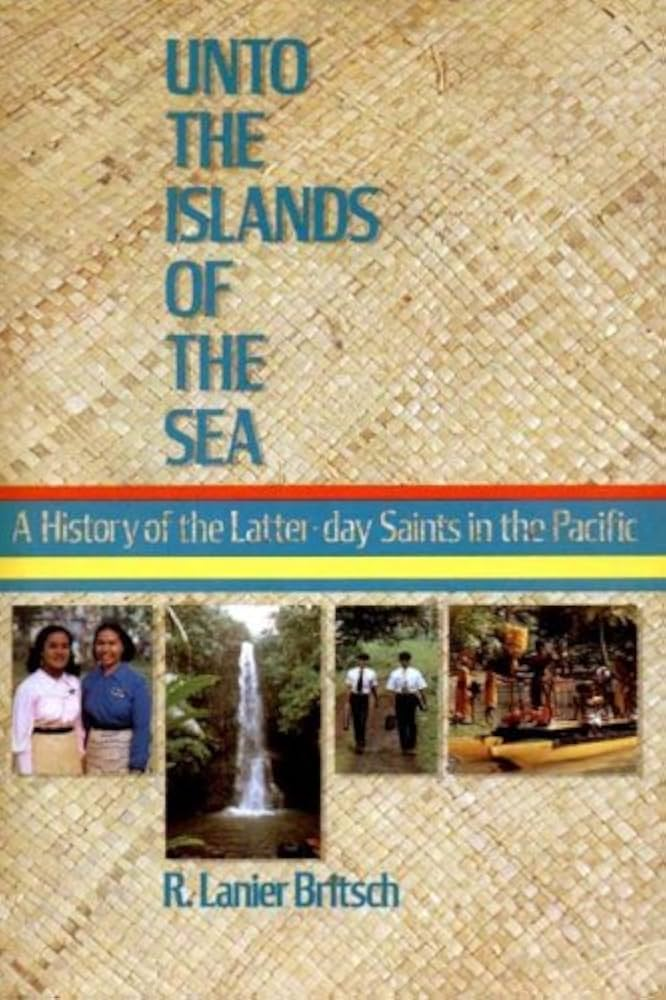
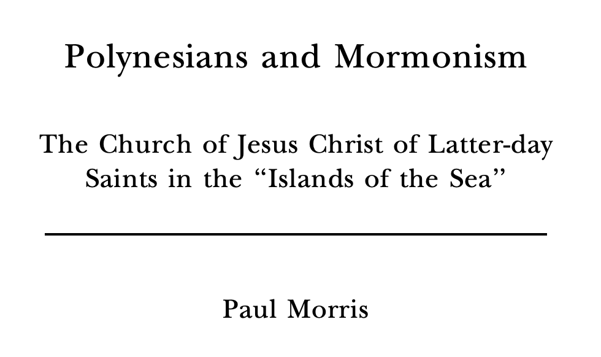
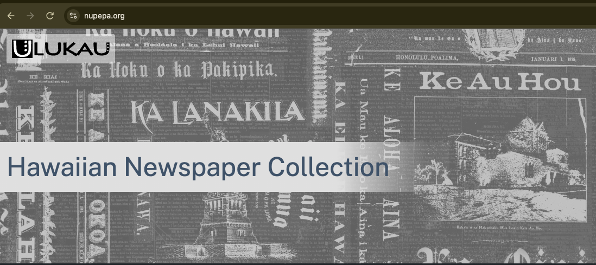

Ka Palapala: The Path to Hawaiian Literacy
LING 150C, Week 10
![]()
October 29, 2026
Reminders
Final Paper Topic Idea is due tomorrow, Friday, October 30.
- ~100-150 words identifying a topic or a few topics you would be interested in pursuing.
- Today’s chapter is full of possible topics (see the last slides).
Preliminary Sources and Initial Research Question is due Friday, November 6 (3 sources + initial question).
No class Tuesday, November 3 (Election Day). Next class is Thursday, November 5 (Ch. 18, language endangerment).
Today’s Plan
Part 1: Writing Hawaiian (about 30 min)
- How do you write a language that has never been written?
- A word for “writing,” an alphabet, and a vote
- What the new spelling left out
Part 2: Did Hawaiʻi become literate? (about 40 min)
- How fast, and how many?
- What does “literate” mean? Reading versus reciting
- What was there to read? Newspapers and knowledge
- Putting it together, and your final paper
Warm-Up: “Ua loaʻa iaʻu!” (3 min)
“Having her eye directed to the first class of letters … she followed me in enunciating the vowels, one by one … Her countenance brightened … the queen exclaimed, ‘Ua loaʻa iaʻu!’ ‘I’ve got it!’” (Bingham 1847, in Schütz p. 189)
Later, Kaʻahumanu wrote: “Many are the people—few are the books.”
Discuss with a neighbor: What does her reaction tell us about how Hawaiians first met writing? And what did Sheldon Dibble report about other reactions?
Part 1: Writing Hawaiian
Timeline
| Date | Event |
|---|---|
| 1820 | First Company of missionaries (ABCFM) arrives |
| Jan 1822 | The alphabet (Pīʻāpā) printed: 8 pages, 500 copies |
| 1826 | Missionaries vote on the consonants; official orthography |
| Feb 1834 | Ka Lama Hawaiʻi, first newspaper, at Lahainaluna |
| 1835 | Peak year for the mission press: 25 titles, 73,200 books |
| 1822-1899 | Over 650 Hawaiian-language titles |
| 1834-1948 | 106 different Hawaiian-language newspapers |
A Word for “Writing” (4 min)
There was no Hawaiian word for writing before contact. Which would you choose?
| Idea | Candidates |
|---|---|
| Form (what writing looks like) | kiʻi ‘picture’, kākau or uhi ‘tattoo’, kaha ‘scratch’, helu ‘scratch, count, list’, heluhelu ‘chant words rhythmically’ |
| Function (what writing does) | something based on ʻōlelo ‘speech, language’ |
Discuss: Which would you pick, and why? What did Hawaiians actually choose?

Designing an Alphabet: Vowels First
The missionaries began with English spelling of vowels… and scrapped it.
| English | Hawaiian orthography |
|---|---|
| a in cat, father, cake, all… | a = one sound |
| 5 letters, 12+ vowel sounds | a e i o u = five vowels |
Later addition: the macron (kahakō) marks a long vowel: a vs. ā, e vs. ē, and so on.
| Short vowel | Long vowel |
|---|---|
| kala ‘to loosen, forgive’ | kālā ‘money, dollar’ |
Why would English spelling be a bad model for Hawaiian? What does a good alphabet do? Why does the macron matter?
The Consonant Problem (5 min)
Speakers pronounced these differently without changing meaning:
| Set | Example |
|---|---|
| p ~ b | tapu, tabu |
| l ~ d ~ r | hale, hare |
| t ~ k | tapu, kapu |
| v ~ w | heva, hewa |
Discuss: What does it mean that hale and hare both meant ‘house’? What would you have done as a missionary?
From Your Posts: Who Decides?
“…it left me wondering if it was right (or respectful) to push a change to one letter or another back in 1826. Was it really best to have the missionaries vote …? It feels like yet another negative impact of colonization, but then I wonder what it would have looked like for Hawaiians if they were not able to communicate with the rest of the world in writing.” (Nathan)
“…how much native Hawaiians actually got to say in how their own alphabet was made … how did the first Hawaiian scholars feel when certain sounds were just left out or changed around?” (Dakodah)
Discuss in groups: What evidence in the chapter speaks to Nathan’s and Dakodah’s questions? What doesn’t the chapter tell us?
From Your Posts: Other Alphabets, Same Problem
“In Vietnamese there is a phrase: quốc ngữ … brought by Europeans … the sound k can be spelled as c, k, or q depending on the vowel following it.” (Jolie)
“This reminds me of how indigenous languages in Ecuador, like Kichwa, were written down. Linguists in both places had to adapt a foreign alphabet to fit local sounds and regional dialects.” (Hanna)
| Sound /k/ | Vietnamese (quốc ngữ) | Hawaiian (after 1826) |
|---|---|---|
| Spelling | c, k, q (depends on the next vowel) | k always |
Discuss: Is Hawaiian’s “one letter, one sound” better for learning to read? What does a writing system cost you if it is less regular?
From be-a-ba to pīʻāpā
Webster’s English speller taught spelling aloud, by syllable:
ba be bi bo bu … → “bi, a, ba”
| Year | Hawaiian word for ‘alphabet’ |
|---|---|
| 1824 | be-a-ba (letter b was called be) |
| 1828 | pi-a-pa (after the 1826 vote: b became p) |
| Today | pīʻāpā (long vowels and ʻokina now written) |
What changed at each step, and why?
Relearning How to Spell
Thousands learned from The alphabet (1822-1826), then had to relearn:
| Old spelling | Modern |
|---|---|
| tabu | kapu ‘forbidden’ |
| aore | ʻaʻole ‘not’ |
| heva | hewa ‘mistake’ |
| hidahida | hilahila ‘ashamed’ |
| maitai | maikaʻi ‘good’ |
| motu | moku ‘island’ |
Old books kept circulating, so two spelling systems competed.
What does this say about the cost of reforming an orthography?
What the Alphabet Left Out
The 1826 orthography did not regularly write the ʻokina (glottal stop) or kahakō (vowel length).
| Written | Could mean |
|---|---|
| makau | makau ‘fishhook’ or makaʻu ‘fear’ |
| kou | kou ‘your’ vs. koʻu ‘my’ |
E makau kakou ia Iala
How would a native speaker know which one?
From Your Posts: Reading the Old Newspapers Today
“When reading 19th-century Hawaiian-language newspapers (nūpepa), the absence of explicit ʻokina and kahakō … requires modern readers to rely heavily on context and traditional oral knowledge to deduce exact word meanings.” (Cara)
Discuss: Why is this harder for a learner than for a native speaker of 1850? What does that say about who the orthography was designed for?
Part 2: Did Hawaiʻi Become Literate?
How Fast? How Many?
| Year | What was printed |
|---|---|
| 1822 | The alphabet: 500 copies, then 2,000 more |
| 1824 | 7,000 copies of a 4-page Alphabet |
| 1825 | 61,000 copies of various 8-page Alphabets |
| through 1826 | about 1,626,000 pages of Hawaiian |
| 1835 | 25 titles, 73,200 books, about 7,960,000 pages |
| Jan 1822 to mid-1845 | 149,911,383 pages (cumulative) |
An estimated 50,000 readers and learners (Bingham)
Titles Per Decade

What do you notice? What might explain the decline after the 1830s?
Why Did People Learn So Fast?
- Eager learners: books were intriguing; mana attached to books
- An efficient writing system: one letter, one sound
- Chiefly support: Kuakini, Kamāmalu, Liholiho, Kaʻahumanu asked for books and schools
- Monitors: early students became teachers (Lancasterian method)
- Pressure: Hoapili required children over 4 to attend, exempted teachers from labor, and forbade marriage to couples who could not read
Which of these do you think mattered most? What’s missing from the list?
What Does “Literate” Mean? (4 min)
A literate person can…
- recognize letters and recite the alphabet
- associate letters with sounds
- associate a whole written word with a spoken word (and idea)
- read isolated common words aloud
- read sentences aloud
- develop a style of “oral interpretation”
- read “silently”
- understand the content of any written matter
Where would a student who can recite the Pīʻāpā from memory fall on this scale?
Two Views
| Success | Doubt |
|---|---|
| Judd (1880): literacy “greater than in any other country in the world, except Scotland and New England” | Andrews (1832): “probably one half of all the schools … have at this day nothing to read but the Pia-pa” |
| Dibble (1839): “at least 30,000 readers,” perhaps a third of the population | Andrews: many “think there is a kind of mystery, or perhaps magic, in reading” |
| Dana (1870s): implied the whole population could read and write | Andrews: memorizing “does not imply that they can read a word” |
Who is telling us this? What would they gain by exaggerating… or by doubting?
From Your Posts: Reading or Reciting?
“Missionaries bragged about extremely high literacy numbers mostly based on students reading out loud, but critics like Lorrin Andrews pushed back … This makes me wonder how much of early Hawaiian literacy was genuine reading comprehension as opposed to oral memorization.” (Kiana)
“How did missionaries really determine if Hawaiians truly understood what they were reading … especially when memorization was already a big part of Hawaiian learning?” (Dyllan)
“As a multilingual person, I know reading words aloud is different from true comprehension … early books were poorly translated, so students often memorized texts without full understanding.” (Hanna)
Discuss: How could a historian tell the difference between reading and reciting?
From Your Posts: Why Read, If Not to Understand?
“The idea that early on, Hawaiians valued writing for reasons other than understanding the content is very interesting to me … maybe including things like prestige or identity associated with reading certain texts.” (Jinghao)
Bound books are in good demand, but pamphlets “have lost their value in the eyes of the people” (Thurston and Bishop 1835).
“…if there’s any society that opposed writing when it was introduced to them?” (Jinghao)
Discuss: What other purposes did books and writing serve in 1820s-1840s Hawaiʻi?
What Was There to Read?
- Mostly religious: Scripture, hymnals, catechisms, spellers
- Dibble: “everything connected with instruction was inseparably connected … with Christianity”
- In nearly 50 years, the mission press printed only three books on Hawaiian history and culture (under 650 pages)
- Ka Moʻolelo Hawaiʻi (1838): written by students at Lahainaluna, edited by Dibble; the first book of Hawaiian literature in book form
- Censorship from Boston; one missionary resigned over it
Nadia asked about the role of religious institutions today. How does what was printed connect?


Newspapers
- Ka Lama Hawaiʻi, Lahainaluna, February 1834
- 106 different newspapers in 114 years; as many as 14 at the peak (1896)
- Sacred and secular; Hawaiʻi and world news; sometimes a different point of view from the mission
- Last secular newspaper for native speakers: Ka Hōkū o Hawaiʻi, 1948
- About 125,000 pages
Should traditional knowledge be printed? Some said yes (experts are dying out). Others said no (kahuna would lose prestige).
From Your Posts: Preserve or Change?
“…we often think of literacy as a way to preserve language and culture, but I had never really considered how it could also change the way knowledge is shared and valued. … does that strengthen cultural preservation, or does it risk weakening the traditions surrounding how that knowledge was originally shared?” (Rucella)
“…in many Indigenous communities, the introduction of colonial influences, and subsequently written language, at first resulted in the loss of cultural knowledge … yet Hawaiians were also able to use writing to preserve aspects of their own culture.” (Kale)
Discuss: Is Rucella’s question an either/or? What does Schütz conclude?
From Your Posts: “By and By”
“…in Kaʻahumanu’s writing she had said ‘By and by, perhaps, we shall be Akamai’ which is really close to phrases that I and my friends use commonly in Pidgin … bumbai … and … akamai to mean smart or skilled.” (Maria)
Discuss: What is happening in the sentence Kaʻahumanu wrote? Which word is Hawaiian and which is English? What does this connect to from Week 8?
Today: Nūpepa Online
- Schütz (2012): 125,000 pages originally published; 75,000 found and scanned
- ʻIke Kūʻokoʻa (Liberating Knowledge): volunteers transcribing the scans into searchable text
- Schütz’s 2012 goal: roughly 1,000,000 pages of text word-searchable
- Searchable: topics, words, even grammatical constructions
- Now: online at nupepa.org, newspapers from 1834 to 1948, searchable by word, title, date, or place

Why would linguists be especially interested in a searchable newspaper archive?
Putting It Together (5 min)
Schütz: there is “no clear answer” to how successful literacy was.
- Success: an efficient alphabet; fast spread; newspapers; records for today’s revitalization
- Limits: few books; mostly religious; reading aloud versus understanding; “not a sure path to power and prosperity”
Write 3-4 sentences (3 min): Was nineteenth-century Hawaiian literacy a success? Make one claim and support it with one piece of evidence from the chapter or from a classmate’s post.
Your Final Paper: Topic Ideas
Today’s chapter suggests questions that fit the assignment (language, country, or island in the Pacific; tied to a course reading):
- How was another Pacific language first written down, by whom, and who decided on the spelling?
- How did missionary writing compare in Tahiti, Samoa, or Aotearoa?
- What can historical newspapers tell us about language use in a community?
- How have Hawaiian orthography (ʻokina, kahakō) and its standardization changed since 1826?
- Does writing preserve or change knowledge in a particular community?
Topic Idea due tomorrow (Fri 10/30), ~100-150 words. Preliminary Sources and Research Question due Fri 11/6.
Next Week
Tuesday, November 3: no class (Election Day)
Thursday, November 5: Ch. 18 (Guérin and Yourupi): language endangerment
Friday, November 6: Preliminary Sources and Initial Research Question due
Friday, October 30 (tomorrow): Final Paper Topic Idea due

LING 150C